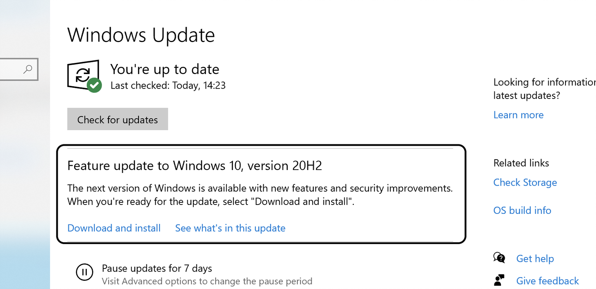
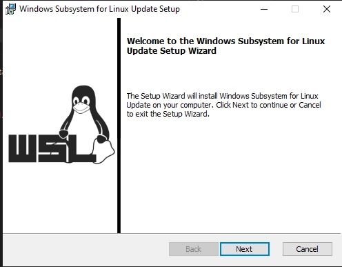

Prerequisites
Before downloading and installing the software, a couple of tasks must first be completed, to enable seamless integration with target production platforms, version control, and to allow for collaboration cross-platform projects within the DevOps team.
System Requirements
Windows 10 machines must meet the following requirements to install the DevOps Environment:
- Understanding which version you are using is not required, just ensure that you are running either:
- version 2004 for the consumer edition
- version 20H2 for the business edition
- Enable the WSL 2 feature on Windows,
- The following hardware prerequisites are required:
- 64 bit processor with Second Level Address Translation (SLAT)
- 8GB system RAM
- BIOS-level hardware virtualization support must be enabled in the BIOS settings.
- Download and install the Linux kernel update package.
Checking your Windows Version
Check your Windows version by selecting the Windows logo key + R , type winver, select OK. (Or enter the ver command in Windows Command Prompt)

Consumer Edition

Business Edition
If your version is NOT 2004/20H2, please update to the latest Windows via Windows Update, as follows.
Click the Windows Logo then settings:
Then select Update & Security , and Windows Update.
Apply any outstanding updates that you have rebooting when asked. Eventually you will open the Windows Update panel and see:
 If you have a consumer edition of Windows
If you have a consumer edition of Windows
If you have the business edition of Windows
Click, Download and install. The Windows Update page will change to something similar to below showing that Windows 10, Version 2004 is installing. Go take a nap at this point (the process to just over an hour and 40 minutes for me), as the update process will rotate thru several status changes, Getting things ready, Downloading, and Installing.
 Consumer Edition
Consumer Edition
 Business Edition
After your nap, check and you will see that the update has completed, and that Your system can be rebooted. Press the Restart now button, and restart.
Install the Windows Subsystem for Linux
Now we need to enable the "Windows Subsystem for Linux" optional feature, which is used by Docker to host the containers used by VS Code.
Open PowerShell as Administrator and run:
PS C:\WINDOWS\system32\> dism.exe /online /enable-feature /featurename:Microsoft-Windows-Subsystem-Linux /all /norestart
Deployment Image Servicing and Management tool
Version: 10.0.19041.329
Image Version: 10.0.19041.329
Enabling feature(s)
[==========================100.0%==========================]
The operation completed successfully.
Update to WSL 2
Enable the 'Virtual Machine Platform' optional component
Before installing WSL 2, you must enable the "Virtual Machine Platform" optional feature.
Open PowerShell as Administrator and run:
PS C:\WINDOWS\system32\> dism.exe /online /enable-feature /featurename:VirtualMachinePlatform /all /norestart
Deployment Image Servicing and Management tool
Version: 10.0.19041.329
Image Version: 10.0.19041.329
Enabling feature(s)
[==========================100.0%==========================]
The operation completed successfully.
Restart your machine to complete the WSL install and update to WSL 2.
PS C:\WINDOWS\system32\> restart-computer
Set WSL 2 as your default version
Run the following command in PowerShell as Administrator to set WSL 2 as the default version:
PS C:\WINDOWS\system32\> wsl --set-default-version 2
You might see this message after running that command:
WSL 2 requires an update to its kernel component
Please click this link and run the downloaded MSI to install the Linux kernel on your machine for WSL 2 to use.

Once you have the kernel installed, please run the following command again and it should complete successfully without showing the warning message about the kernel component.
wsl --set-default-version 2